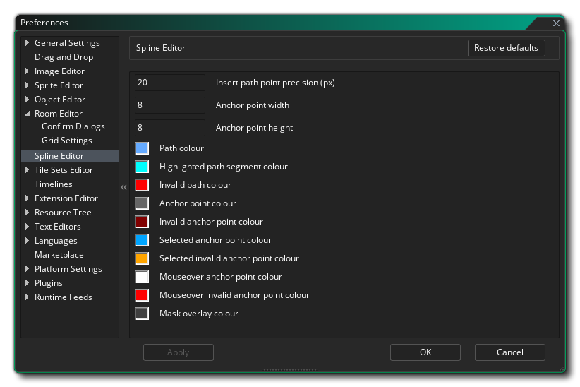

Las Preferencias del Editor de Spline se utilizan principalmente para definir cómo se ve y se siente el editor de rutas, aunque afectarán a otros aspectos del IDE (como el editor de formas físicas). Las siguientes opciones existen:
- Insertar precisión de punto de ruta (px): establece el valor de precisión (en píxeles) para insertar puntos en una ruta, es decir: el mouse debe estar dentro de este rango para insertar el punto en lugar de agregar uno nuevo. El valor predeterminado es 20px.
- Anchura del punto de anclaje: establezca el ancho de los puntos de anclaje en píxeles. El valor predeterminado es 8px;
- Altura del punto de anclaje: establezca la altura de los puntos de anclaje en píxeles. El valor predeterminado es 8px;
- Color de ruta: el color que se usará para mostrar la ruta a medida que la edita. El valor predeterminado es (rgba) #FFFFFFFF.
- Color de segmento de trazado resaltado: el color que se utilizará para resaltar los segmentos de trazado seleccionados. El valor predeterminado es (rgba) #FFFFFFFF.
- Color de ruta no válido: el color que se utilizará para resaltar una ruta que no es válida. El valor predeterminado es (rgba) #FF0000FF.
- Color de los puntos de anclaje: el color que se utilizará para dibujar los puntos de anclaje de la ruta. El valor predeterminado es (rgba) #C0C0C0FF.
- Color de puntos de anclaje no válido: el color que se utilizará para dibujar los puntos de anclaje de ruta. El valor predeterminado es (rgba) #800000FF.
- Color seleccionado del punto de anclaje: el color que se utilizará para dibujar los puntos de anclaje de trayectoria que se han resaltado (seleccionado). El valor predeterminado es (rgba) #00A4FFFF.
- Color de punto de anclaje no válido seleccionado: el color que se utilizará para dibujar los puntos de anclaje resaltados pero no válidos. El valor predeterminado es (rgba) #FFA400FF.
- Color del punto de anclaje del mouse-over: el color que se usará para dibujar los puntos de anclaje que están activos. El valor predeterminado es (rgba) #FFFFFFFF.
- Color de punto de ancla no válido del mouse - El color que se utilizará para dibujar los puntos de anclaje que están activos pero no son válidos. El valor predeterminado es (rgba) #FF0000FF.
- Color de superposición de máscara: establezca el color de superposición para las máscaras si están habilitadas (consulte más arriba). El valor predeterminado es (rgba) #404040FF.